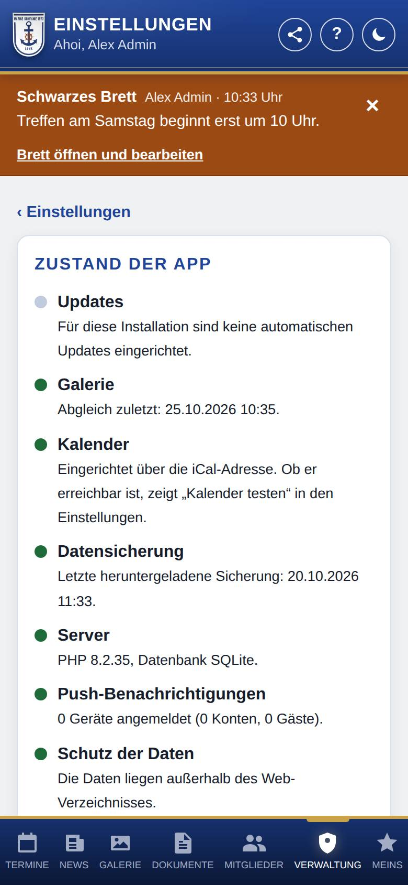
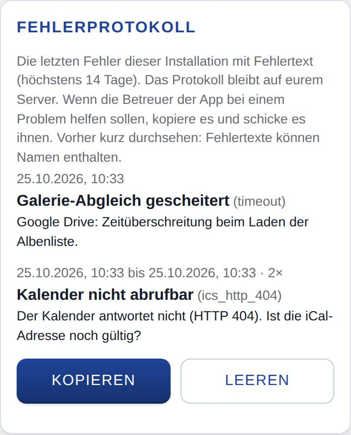

Zustand und Updates
Hier siehst du auf einen Blick, ob die App rund läuft, welche Version installiert ist und ob es Updates gibt. Außerdem findest du hier das Fehlerprotokoll und die Statusmeldungen an die Betreuer der App.

So öffnest du die Seite
Tippe unten auf Verwaltung, dann auf Einstellungen und auf Zustand und Updates.
Was du hier siehst
Zustand der App
Eine Ampel mit einer Zeile je Thema. Jede Zeile sagt in einem kurzen Text, was los ist und was zu tun ist.
- Updates: ob die App aktuell ist, ob ein Update ansteht oder fehlgeschlagen ist.
- Galerie: wann der letzte Abgleich mit Google Drive war, ob er geklappt hat und ob Bilder noch aufbereitet werden oder sich nicht laden ließen.
- Kalender: ob und wie der Kalender eingerichtet ist und ob die Verbindung mit Google ihn lesen darf.
- Datensicherung: wann zuletzt eine Sicherung heruntergeladen bzw. in Google Drive abgelegt wurde.
- Server: welche PHP-Version und Datenbank laufen; gelb, wenn auf dem Webspace weniger als 200 MB frei sind.
- Push-Benachrichtigungen: wie viele Geräte angemeldet sind, oder was dem Server fehlt, um Benachrichtigungen zu senden.
- Nur ohne WordPress: Schutz der Daten (ob Datenbank und Zugangsdaten aus dem Internet abrufbar wären; ist die Zeile rot, lass das sofort beim Hoster beheben) und Hintergrundaufgaben (ob ein Cronjob beim Hoster die Aufgaben erledigt, mit der Adresse dafür).
Die Farben: Grün heißt alles in Ordnung. Gelb heißt, etwas sollte erledigt werden, z. B. eine neue Datensicherung. Rot heißt, etwas funktioniert nicht. Grau heißt ausgeschaltet, noch nicht eingerichtet oder in dieser Installation nicht verfügbar. Ist bei euch eine Kontaktadresse der Betreuer hinterlegt, steht sie darunter bei Hilfe.
Updates
- Installiert: … mit dem Zeitpunkt der letzten Prüfung und dem Verweis Was ist neu.
- ✓ Die App ist auf dem neuesten Stand. oder Neue Version: … mit dem Knopf Jetzt auf … aktualisieren.
- Nach Updates suchen und Zustand neu laden.
- Updates automatisch einspielen (empfohlen) und Vorabversionen erhalten (zum Testen).
- Auf eine ältere Version zurück: zum Aufklappen, wenn es frühere Versionen gibt.
- Statusmeldungen an die Betreuer der App senden: nur, wenn eure App Statusmeldungen vorsieht.
Fehlerprotokoll
Die Fehler der letzten 14 Tage (höchstens 50) mit Zeitpunkt, Art des Fehlers und vollständigem Fehlertext, mit den Knöpfen Kopieren und Leeren. Gab es keine, steht dort Keine Fehler in den letzten 14 Tagen.

So gehst du vor
Den aktuellen Stand holen
- Tippe auf Zustand neu laden.
Eine neue Version einspielen
- Tippe auf Nach Updates suchen. Die App sucht ohnehin einmal am Tag selbst.
- Gibt es eine neue Version, tippe auf Jetzt auf … aktualisieren. Das dauert bis zu zwei Minuten.
- Danach lädt die App neu.
Kann die neue Version auf eurem Server nicht laufen (z. B. zu alte PHP- oder WordPress-Version, fehlende Schreibrechte), steht der Grund darüber und der Knopf ist gesperrt. Das muss zuerst behoben werden.
Eine neue Hauptversion einspielen
- Lies die Hinweise zur Version (unter Was ist neu bzw. von den Betreuern der App).
- Tippe auf Hauptversion einspielen und bestätige die Rückfrage.
Eine neue Hauptversion spielt die App nie automatisch ein. Vorher sichert sie die Daten. Zurück auf die bisherige Hauptversion geht es danach nicht per Knopf, nur mit Hilfe der Betreuer.
Auf eine ältere Version zurückgehen
- Tippe auf Auf eine ältere Version zurück.
- Wähle bei Version eine frühere Version derselben Hauptversion.
- Tippe auf Zurückrollen und bestätige die Rückfrage.
Die Version, von der du kommst, spielt die App danach nicht mehr automatisch ein, erst wieder die nächste neuere.
Das Fehlerprotokoll an die Betreuer schicken
- Sieh das Protokoll kurz durch: Fehlertexte können Namen oder Inhalte enthalten.
- Tippe auf Kopieren und füge den Text in eine Nachricht an die Betreuer ein. Klappt das Kopieren nicht, zeigt die App den Text zum Markieren.
- Ist das Problem behoben, kannst du mit Leeren das Protokoll löschen.
Gut zu wissen
- Automatische Updates: Solange Updates automatisch einspielen (empfohlen) an ist, spielt die App neue Versionen derselben Hauptversion selbst ein. Sie sucht dafür einmal am Tag und spielt eine passende Version dabei gleich ein; eine feste Uhrzeit gibt es nicht. Ohne Cronjob beim Hoster passiert das nur, wenn jemand die App (mit WordPress: die Webseite) aufruft; wird sie selten aufgerufen, kommen Updates entsprechend später (siehe Für Fortgeschrittene unten). Mit WordPress kann die Webseite automatische Updates sperren; dann steht das hier, und du spielst neue Versionen von Hand ein.
- Vorsorge: Vor Updates mit Änderungen an der Datenbank und vor einer neuen Hauptversion sichert die App die Daten automatisch auf dem Server; die letzten fünf dieser Sicherungen bleiben. Schlägt ein Update fehl, läuft die bisherige Version weiter und der Grund steht hier.
- Zurückgezogene Version: Wird eine fehlerhafte Version zurückgezogen, wechselt die App von selbst auf eine geprüfte Version (außer automatische Updates sind gesperrt); mit Jetzt auf … wechseln geht das sofort. Gibt es noch keine geprüfte Version, meldest du dich bei den Betreuern der App.
- Vorabversionen: Mit Vorabversionen erhalten (zum Testen) bekommt diese Installation jede neue Version, sobald sie gebaut ist, noch bevor sie für alle freigegeben wird. Das ist für eine Testseite gedacht. Schaltest du es aus, bleibt die jetzige Version installiert, bis eine neuere für alle freigegeben ist.
- Statusmeldungen: Wenn du zustimmst, schickt die App den Betreuern stündlich ein kurzes Lebenszeichen (u. a. Version, Farbe der Ampel je Zeile, Fehlercodes mit Ursache, z. B. „Kalender: HTTP 404“, und Nutzungszahlen ohne Namen: wie viele Konten es gibt, wie viele davon in den letzten 24 Stunden, 7 und 30 Tagen aktiv waren und wie viele Personen welchen Bereich genutzt haben) und meldet schwere Fehler sofort. Namen, Inhalte und Fehlertexte werden nie gesendet. Was genau gesendet wird, zeigt Was genau gesendet wird (Beispiel: Lebenszeichen); darüber steht, wann die letzte Meldung ging. Nimmst du die Zustimmung zurück, werden auch die gezählten Fehler gelöscht.
- Fehlerprotokoll: Es bleibt auf eurem Server und wird nicht gesendet, auch ohne Zustimmung zu den Statusmeldungen. Gleiche Fehler direkt hintereinander stehen nur einmal da, mit Anzahl und Zeitraum. Adressen sind auf den Server gekürzt; so bleibt z. B. eine geheime Kalender-Adresse geheim.
- Bekommt eure Installation keine Updates über die App, steht im Abschnitt Updates nur die installierte Version.
Für Fortgeschrittene: Ein Cronjob ist ein Auftrag im Kundenmenü eures Hosters, der eine Adresse regelmäßig aufruft. Ohne ihn erledigt die App ihre Hintergrundaufgaben (Abgleich von Galerie und Kalender, Updates) nach Seitenaufrufen. Zuverlässiger ist ein Cronjob, der alle 15 Minuten die Adresse aufruft, die bei Hintergrundaufgaben steht. Mit WordPress gibt es diese Zeile nicht; dort ersetzt der Cronjob WP-Cron, wie in der Anleitung zur Installation mit WordPress beschrieben.
Was du bei typischen Meldungen tun kannst, steht unter Häufige Probleme.